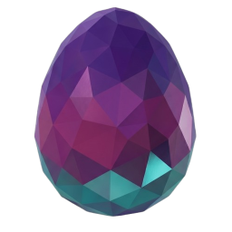

✨ 独立开发者 & 探索者
你好，欢迎来到我的数字星空！我是一名专注于桌面端极致体验与系统定制的开发者。 热衷于研究 Electron 动效架构、Windows 底层机制 与 毛玻璃拟物交互。 我坚信：优秀的软件不仅要运行如飞，更应拥有令人愉悦的视听质感。
⏱️ 实时指标 · Live Deduction
本站平稳运行
SYSTEM UPTIME
计算中...
界面渲染能效
UI PERFORMANCE
< 16ms 极速响应 · 60+ FPS
开源探索状态
OPEN SOURCE REPOS
4+ 核心项目 · 100% 独立开发
🌟 拳头开源项目 · Featured Project

Tar V
极简而高级的 Windows 毛玻璃拟物快捷启动面板
将杂乱的桌面收纳进一个轻量、优雅、高度可定制的浮动面板中。通过全局快捷键呼出，具备原生图标并发提取、毛玻璃主题自由调色、拖拽编排与死链一键维护。
常用工具
开发环境
系统调优
⚙️ 系统定制 · Geek Script
WindHawk 增强模组
针对 Windows 11/10 任务栏、窗口交互及资源管理器深层注入定制的 C++ 脚本集合，让桌面交互回归随心所欲。
浏览脚本实现 →
🗂️ 全部开源 · Open Source Repositories
我的开源项目总览
正在从 GitHub 推演仓库数据…
📝 推演日志 · Articles & Blog
技术探索、设计思考与心得
🛠️ 技术全景 · Tech Matrix
熟练掌握与常驻生产力
从现代前端视觉呈现到桌面系统深层改造
JavaScript
TypeScript
Electron
C / C++
Node.js
HTML5 / CSS3
Python
Git & GitHub
🎵 专注氛围 · Ambient
Cosmic Stardust
极客编码律动氛围
🌌 推演信条 · Creed
"把逻辑写成诗篇，把美学注入系统。所谓代码，不过是思维在数字星空里的投影。"
开启灵感交流，或在 GitHub 探讨有趣项目
随时欢迎提出建议、Bug 反馈或跨平台开发交流。